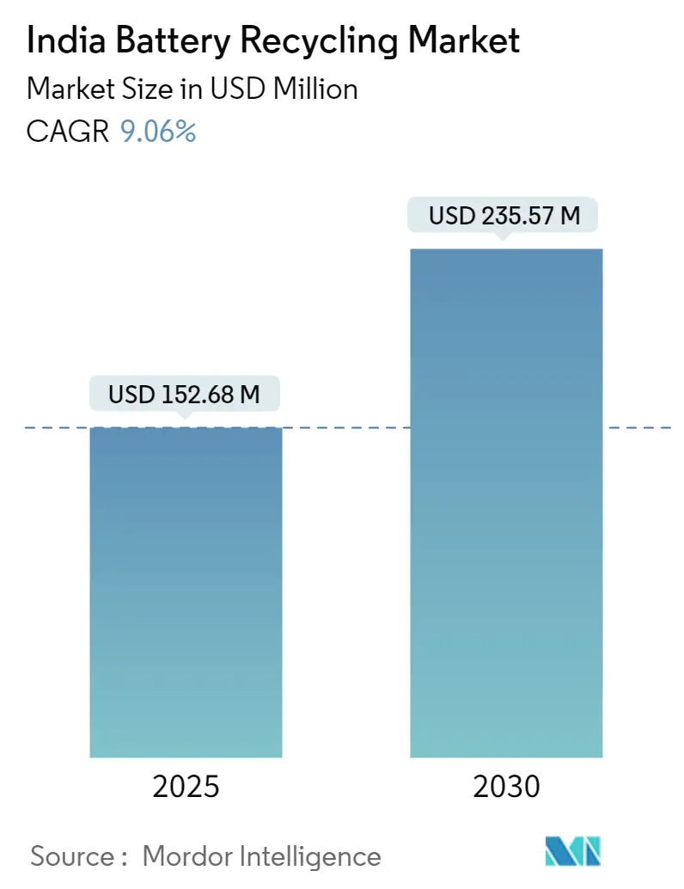
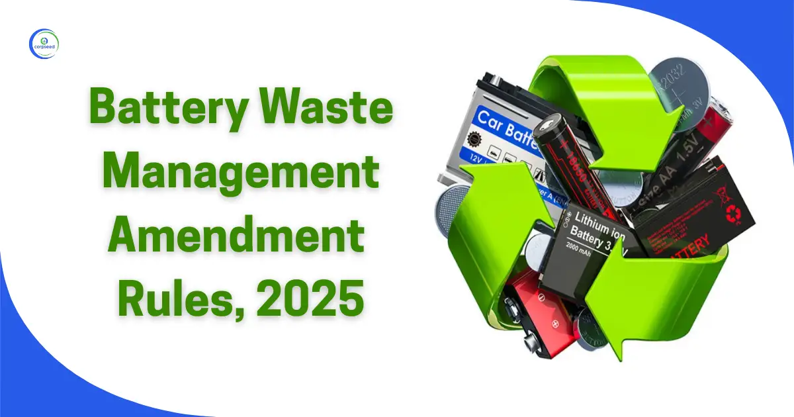
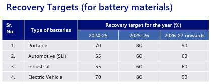
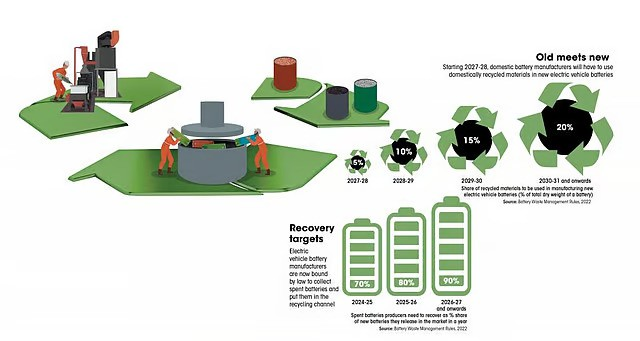
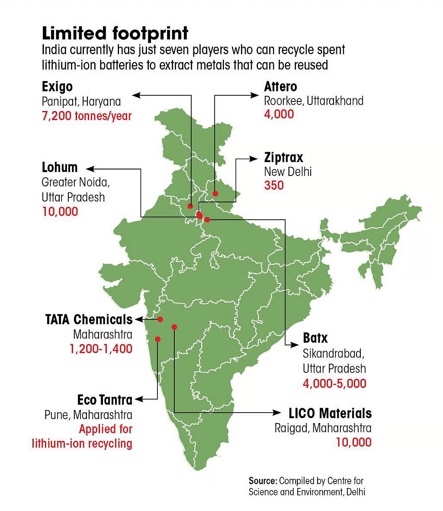
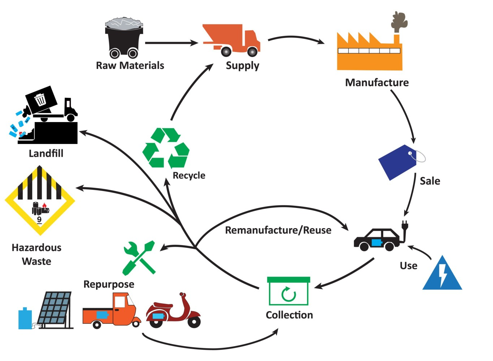
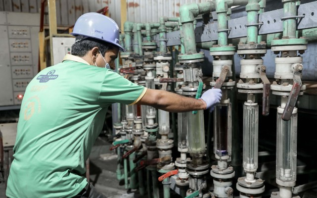
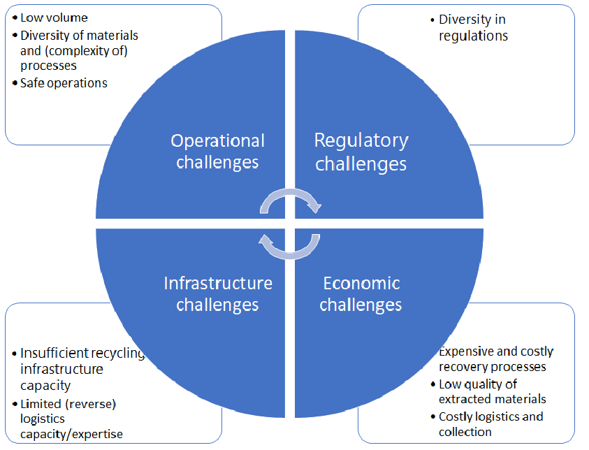
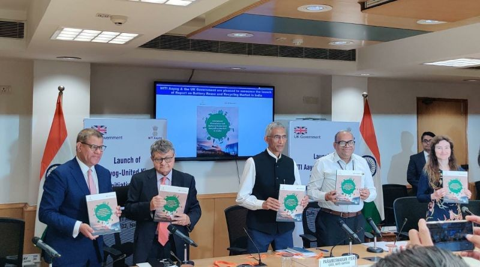

As India accelerates its transition to electric mobility, the management of lithium-ion batteries has emerged as a critical environmental and economic challenge. The country is developing various approaches to battery recycling that balance technological innovation, regulatory compliance, and sustainability goals. This newsletter examines India's evolving lithium-ion battery recycling landscape, highlighting key initiatives, challenges, and opportunities in this burgeoning sector.
The Growing Market for Battery Recycling in India
India's lithium-ion battery market is undergoing explosive growth, creating both challenges and opportunities for sustainable waste management. According to JMK Research & Analytics estimates, India's Li-ion battery market will reach a staggering 132 GWh by 2030, translating to a potential $1 billion opportunity in the battery recycling sector. This growth is primarily driven by the government's push for electric mobility through initiatives like the National Electric Mobility Mission Plan 2020.
The environmental imperative for recycling is equally compelling. Lithium-ion batteries contain valuable metals including lithium, cobalt, nickel, and rare earth elements that can be recovered and reused. Without proper recycling infrastructure, these batteries risk ending up in landfills, causing serious environmental contamination and squandering valuable resources.

Regulatory Framework Driving Recycling Initiatives
India has established a comprehensive regulatory framework to address lithium-ion battery waste management. The cornerstone of this framework is the Battery Waste Management Rules, 2022, which the Ministry of Environment, Forests & Climate Change, Government of India published on August 24, 2022. These rules replaced the previous Batteries (Management and Handling) Rules of 2001 and cover all battery types, including electric vehicle batteries, portable batteries, automotive batteries, and industrial batteries.
The rules operate on the principle of Extended Producer Responsibility (EPR), making producers and importers responsible for the collection and recycling or refurbishment of waste batteries. The regulatory framework has continued to evolve, with updates in 2023, 2024, and most recently in 2025, reflecting the government's commitment to adapting policies to meet emerging challenges.

Key features of the regulatory framework include:
Extended Producer Responsibility
The Battery Waste Management Rules mandate that producers register with the Central Pollution Control Board (CPCB) and take responsibility for collecting and recycling waste batteries. This approach ensures that manufacturers bear the environmental cost of their products throughout their lifecycle, creating incentives for more sustainable design and production practices.
Ambitious Recovery Targets
The rules establish specific material recovery targets that increase over time. For EV batteries, recovery targets start at 70% in 2024-25, increase to 80% by 2026, and reach 90% after 2026-27. These targets are calculated as a percentage of the dry weight of the battery, pushing the industry toward more efficient recycling technologies.

Recycled Content Requirements
In a move to close the loop on battery materials, producers must incorporate minimum percentages of domestically recycled materials in new batteries, starting at 5% in 2027-28 and increasing to 20% by 2030-31. This provision creates a market demand for recycled materials, supporting the development of a circular economy for battery components.

Different Approaches to Lithium-ion Battery Recycling
Centralized EPR Portal System
India has implemented a centralized Extended Producer Responsibility portal managed by the Central Pollution Control Board (CPCB) . This platform connects manufacturers with authorized recyclers, centralizing e-waste tracking and streamlining recycling processes. The EPR portal enhances accountability, traceability, and transparency in meeting battery recycling obligations.
Currently, only four companies are registered as lithium-ion battery recyclers on India's EPR portal: Recyclekaro , LOHUM , Attero Recycling , and LICO Materials Private Limited . This centralized approach allows for better monitoring of collection and recycling activities while providing financial incentives for compliance.

Collection Infrastructure Development
A key component of India's battery recycling approach is the development of robust collection infrastructure. The Battery Waste Management Rules prohibit disposing of batteries in landfills or through incineration, necessitating dedicated collection networks.
The rules promote establishing collection centers where consumers can drop off their waste batteries. These centers serve as the first point in the recycling chain, ensuring that batteries are properly segregated and sent to authorized recyclers.
Secondary Life Utilization
Before proceeding to material recovery, some approaches focus on extending battery life through refurbishment and repurposing. The Battery Waste Management Rules specifically mention refurbishment as a legitimate management option alongside recycling. This approach maximizes the value of batteries by giving them a second life in less demanding applications before final recycling.

Material Recovery Technologies
The final stage in the recycling process involves extracting valuable materials from spent batteries. The regulatory framework focuses on outcomes rather than prescribing specific technologies, requiring high recovery rates (up to 90%) without mandating particular processes.
Companies like Recyclekaro have developed specialized technologies for lithium-ion battery recycling, known for high metal extraction efficiency. As the industry matures, we can expect continued innovation in extraction techniques to improve recovery rates and economic viability.

Challenges in Implementation
Despite the comprehensive regulatory framework and growing market opportunity, lithium-ion battery recycling in India faces several implementation challenges:
Inadequate Collection Infrastructure: While the regulatory framework establishes collection targets, the physical infrastructure for battery collection remains underdeveloped in many parts of the country. This gap makes it difficult for consumers to properly dispose of batteries and for producers to meet their EPR obligations.
Lack of Standardization: The absence of standardized battery designs and labeling systems complicates the recycling process. Different manufacturers use varying chemistries and configurations, making it challenging to develop universal recycling protocols.
Consumer Awareness: Many consumers remain unaware of the proper disposal methods for lithium-ion batteries. The labels on batteries currently carry an icon (a crossed bin) indicating that batteries cannot be disposed of in regular waste, but more comprehensive education is needed.
Technical and Economic Challenges: Recycling lithium-ion batteries is technically complex and can be costly, especially for smaller recyclers. The economics of recycling are still evolving, and without sufficient scale, some recyclers may struggle to operate profitably.

Recommendations for Advancing Battery Recycling
To address these challenges and enhance lithium-ion battery recycling in India, several recommendations emerge from the current landscape:
Enhanced Labeling and Standardization: Implementing a comprehensive labeling system for lithium-ion batteries would facilitate easier identification, sorting, and appropriate recycling. Standardization of battery components and designs could simplify the recycling process and improve recovery rates.
Incentive Mechanisms: Beyond regulatory requirements, financial incentives could accelerate the development of recycling infrastructure and technologies. These might include tax benefits for recyclers, subsidies for using recycled materials, or deposit-refund systems for consumers.
Public-Private Partnerships: Collaboration between government agencies, industry players, and research institutions can drive innovation in recycling technologies and practices. NITI Aayog Collaboration with the UK government to create a roadmap for battery reuse and recycling exemplifies this approach.

Consumer Education Campaigns: Comprehensive awareness campaigns can inform consumers about the importance of battery recycling and proper disposal methods. These campaigns should explain both the environmental impacts of improper disposal and the procedure for returning batteries to collection points.
Conclusion
As the electric vehicle revolution accelerates, the need for effective battery recycling approaches becomes increasingly urgent. By combining regulatory mandates, technological innovation, and stakeholder collaboration, India has the opportunity to establish a world-class battery recycling industry that supports environmental sustainability while recovering valuable materials for the domestic manufacturing sector.